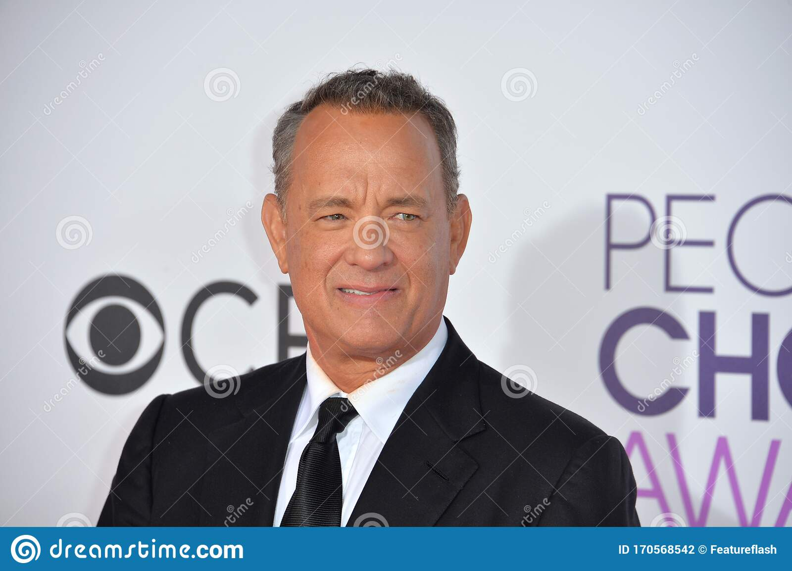

|  | Name | Tom Hanks |
|---|---|---|
| Actual name | Thomas Jeffrey Hanks | |
| Nationality | American | |
| Born | July 9,1956 | |
| Occupation | Actor and filmmaker | |
| Years active | 1977-present | |
| Children | Colin Hanks,Chet Hanks,Truman Hanks and Elizabeth Ann Hanks | |
| Spouse | Rita Wilson(1988), Samantha Lewes(1978-1987) |
Hanks acted in school plays, including South Pacific, while attending Skyline High School in Oakland, California. Hanks studied theater at Chabot College in Hayward, California, and transferred to California State University, Sacramento after two years.
In Hanks's career as an actor and producer, he has received many award nominations. Hanks has received six Academy Award nominations including two consecutive wins for Best Actor for Philadelphia, and Forrest Gump in 1993, and 1994 respectively.
| Year | Title | Director | Co-stars | Role |
|---|---|---|---|---|
| 1994 | Forrest Gump | Robert Zemeckis | Robin Wright | Jenny Curran |
| 1995-2019 | The Toy Story franchise | John Lasseter,Lee Unkrich and Josh Cooley | Tim Allen | Woody |
| 1998 | Saving Private Ryan | Steven Spielberg | Matt Damon | Captain Miller |